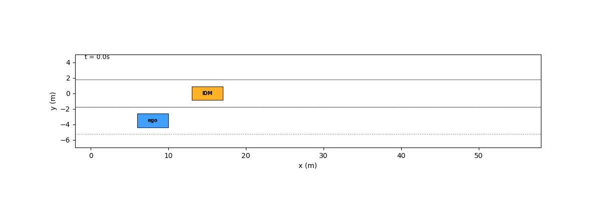
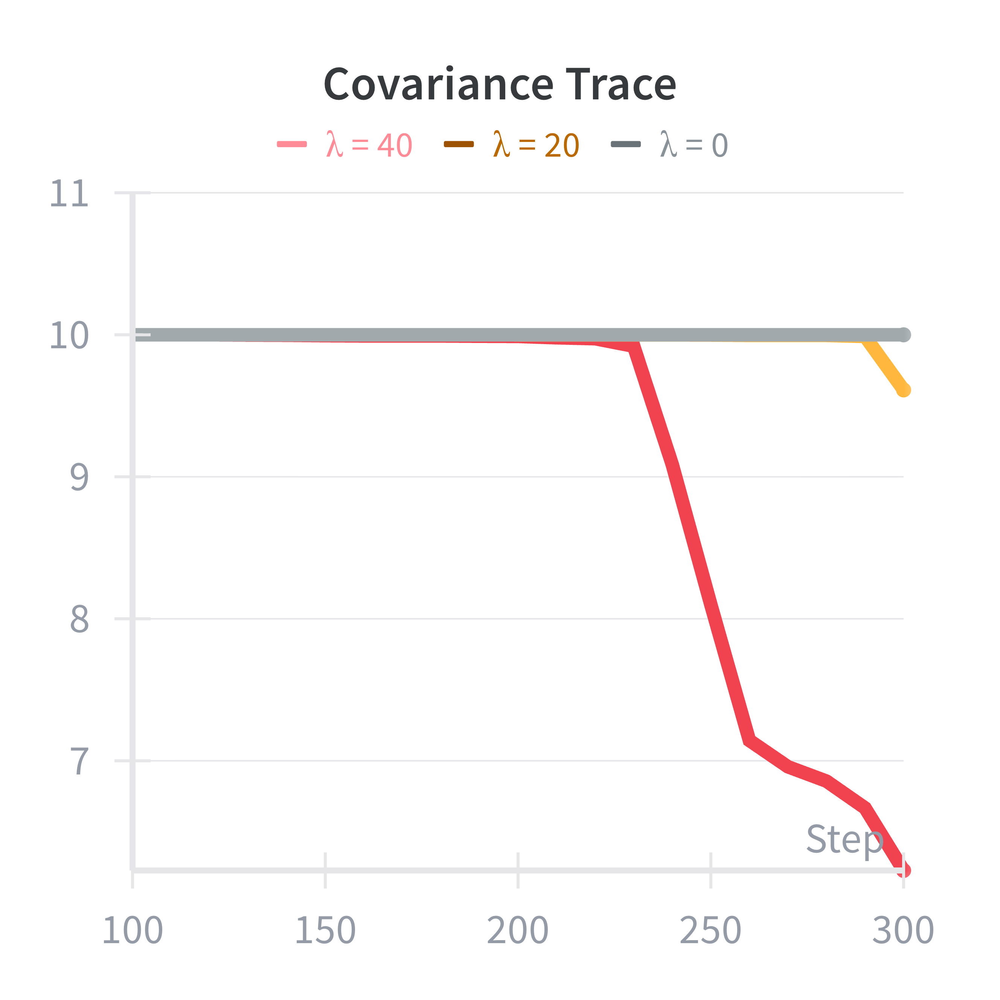
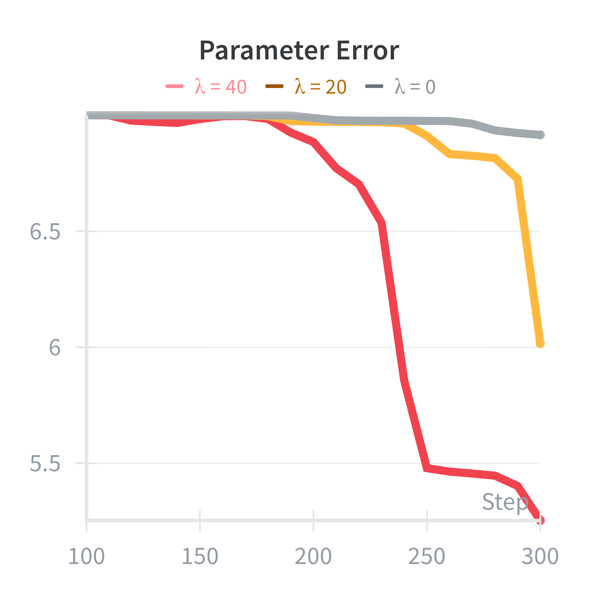

I apply the framework from my paper, Generalized Information Gathering Under Dynamics Uncertainty, to an autonomous highway merging scenario using the MRIDM driver model.
In my recent paper, Generalized Information Gathering Under Dynamics Uncertainty, I proposed a modular framework that decouples dynamics models from information-gathering costs. In this blogpost I apply it to an autonomous highway merging scenario where the ego agent models other cars with MRIDM driver model.
The task is to merge while also reducing uncertainty about the other driver’s MRIDM parameters, which can be thought of as parameter that encode their personality, e.g., aggressive (tailgating, ignoring us) or friendly (yielding, braking early).
The Dynamical System
The system consists of two agents interacting in a 2D plane:
- The Ego Vehicle (Agent 1): Modeled as a double integrator. It has full control over its longitudinal and lateral acceleration.
- The Traffic Vehicle (Agent 2): Follows MRIDM dynamics, meaning it controls its speed to maintain a safe gap to the car in front, accounting for any vehicles approaching from the side.
The full dynamical system is given by:
The Unknowns
The MRIDM parameters to estimate are
: Desired time headway (following distance). : Comfortable deceleration (willingness to brake).
For intuition, an aggressive driver has a small
The Experiment
Using the framework from my paper, I set up the cost function to include both a task cost (get to the target lane velocity and position) and an information-gathering cost (maximize mutual information).
The hypothesis was that with a high information-gathering weight (
Results



The results show that increasing the exploration parameter reduces parameter error and uncertainty. However, the differences are pretty small. There are two reasons for this: 1) MRIDM behavior doesn’t seem to change that much with changes in parameters (or at least not for the parameters I had time to test). Therefore, even when you have the wrong parameter estimate, the resulting predictions are still pretty good, i.e., the parameters may not be identifiable. 2) Just trying to merge into the lane provided plent of excitation of the parameters meaning that the extra exploration incentives were not necessary. I saw similar behavior in some of the experiments of my paper (like in the pursuit-evasion scenario with differentiable pursuer policy).
Thanks for reading and don’t forget to checkout the paper or the code for this experiment.
Blogpost 22/100